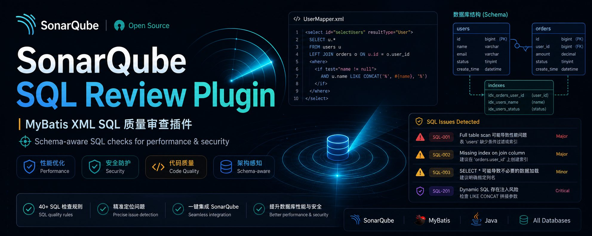

SQL Review Plugin
MyBatis XML SQL 质量守门员 — 基于生产数据库 Schema 元数据，在代码审查阶段精准发现 SQL 性能问题与安全隐患。
为 MyBatis 项目量身打造
深度解析 MyBatis Mapper XML，结合真实数据库 Schema，提供精准的 SQL 质量检查。
MyBatis XML 解析
自动解析 Mapper XML 中的 SQL 语句，支持 <if>、<choose>、<foreach> 等动态标签。
Schema 元数据驱动
基于生产数据库的表结构、索引和行数信息进行精准检查，而非简单的语法匹配。
多环境支持
主环境 (production) + 降级环境 (dev) 双层 Schema 查找策略，确保检查覆盖率最大化。
PR 扫描支持
支持 Pull Request 扫描模式，仅报告增量代码中的问题，适配 CI/CD 工作流。
精准 Issue 定位
通过 Namespace 匹配，将问题定位到对应的 Java Mapper 接口方法和具体行号。
7 条内置规则
覆盖索引缺失、全表扫描、SQL 注入、SELECT * 等常见 SQL 反模式，开箱即用。
7 条 SQL 质量规则
每条规则针对特定的 SQL 反模式，部分规则需要 Schema 元数据支持。
| 规则 ID | 名称 | 严重级别 | 类型 | Schema |
|---|---|---|---|---|
SQL-001 |
WHERE 条件字段缺少索引 | CRITICAL | BUG | ✓ |
SQL-002 |
大表全表扫描 | CRITICAL | BUG | ✓ |
SQL-003 |
使用 SELECT * | MAJOR | CODE_SMELL | ✕ |
SQL-004 |
索引列使用函数导致索引失效 | CRITICAL | BUG | ✓ |
SQL-101 |
大表查询无 LIMIT | MAJOR | BUG | ✓ |
SQL-103 |
LIKE 以 % 开头 | MAJOR | CODE_SMELL | ✕ |
SQL-201 |
动态 SQL 拼接风险 | MAJOR | VULNERABILITY | ✕ |
扫描流程
Sensor 驱动的扫描管线：从 XML 文件到 SonarQube Issue。
核心步骤
XML 解析
Sensor 扫描项目中所有 MyBatis Mapper XML 文件，解析 <select>、<insert>、<update>、<delete> 标签中的 SQL。
Schema 加载
从配置的 Schema 目录加载主环境和降级环境的表元数据（列、索引、行数），支持 Entity 到表名的映射。
规则检查
对每条 SQL 执行所有已激活的规则，结合 Schema 信息判断是否存在问题。
Issue 上报
将发现的问题通过 context.newIssue() 挂载到对应的 XML 文件行上，供 SonarQube 展示和统计。
安装与使用
四步完成插件部署和首次扫描。
构建插件
在项目根目录执行 Maven 构建：
构建产物位于 target/sonar-sql-review-plugin-*.jar
安装到 SonarQube
将 JAR 文件复制到 SonarQube 插件目录，然后重启服务：
配置 Schema 目录
在 SonarQube 管理界面 Administration > Configuration > General Settings > SQL Review 中配置 Schema 路径和环境。
运行扫描
插件配置项
在 SonarQube Administration 界面中配置以下参数。
| 配置键 | 说明 | 默认值 | 类型 |
|---|---|---|---|
sonar.sql-review.schema-path |
Schema 根目录，子目录按环境名组织 | /opt/sonar-schemas |
STRING |
sonar.sql-review.primary-env |
主环境名称（优先查找） | production |
STRING |
sonar.sql-review.fallback-env |
降级环境名称（主环境找不到时回退） | dev |
STRING |
sonar.sql-review.large-table-threshold |
大表行数阈值，超过此行数启用全表扫描检查 | 10000 |
INTEGER |
sonar.sql-review.no-limit-threshold |
触发无 LIMIT 告警的表行数阈值 | 50000 |
INTEGER |
sonar.sql-review.max-joins |
单条 SQL 最大 JOIN 表数 | 3 |
INTEGER |
Schema 目录结构
表元数据 JSON 规范
每张表对应一个 JSON 文件，包含列信息、索引信息和行数估算。
Schema 文件需部署在 sonar-scanner 执行的服务器上。推荐使用 export_schema.py 脚本从数据库自动导出。